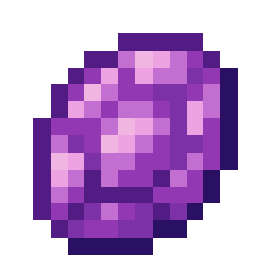

Amethyst is a rare mineral obtained from amethyst ore and loot chests. They are mainly used to craft high-tier tools and armor.
Amethyst ore mined using a diamond pickaxe or stronger drops a single amethyst. If mined by any other tool, it drops nothing. If the pickaxe is enchanted with Fortune, it can drop an extra amethyst per level of Fortune. If the ore is mined using a pickaxe enchanted with Silk Touch, it drops an ore block rather than a single amethyst. The ore is found in the Overworld between Y levels 2 and 34. It can also be found in Mining Paradise between Y levels 24 and 56.
Wandering traders can sell an amethyst for three emeralds.
Hercules Beetles have a chance of dropping 0-1 amethysts upon death.
Amethysts can generate in chests in Ent Dungeons.
TODO: Structure Loot Template
TODO: Crafting Template
TODO: Smelting Template
TODO: Table With Crafting Templates
${name}
